全家丝光的课
普通物理学Ⅱ（H）¶
约 4750 个字 48 张图片 预计阅读时间 14 分钟
任课教师：王业伍
Ref & Credit
不好，有神：https://www.kailqq.cc/NOTE/Physics/
配享太庙：https://savia7582.github.io/Exterior/Physics/2/
一天入门半学期：https://space.bilibili.com/522385498/upload/video/
电磁学¶
电偶极子：一对间距为\(d\)，电荷量为\(q\)的异号电荷构成的偶极子。
电偶极矩：\(\overrightarrow{p}=q \overrightarrow{d}\)。
Flux 通量¶

立体角：\(d\overrightarrow{A} = r^2 d\Omega\)，等号左侧为面积微元，也等于 \(dA \cdot \overrightarrow{n}\)，其中 \(\overrightarrow{n}\) 为单位法向量。

Gauss 定理¶
电通量：\(\Phi = \int \overrightarrow{E} \cdot d\overrightarrow{A} = \frac{\Sigma q}{\varepsilon_0}\)，其中\(q\)为闭合曲面内包含的电荷量。
例
- 无限长均匀带电线（\(L \gt \gt R\)的圆柱），线密度为\(\lambda\)，求距其轴心\(r\)处的电场强度。

选取r处长为\(h\)的圆柱面，此时所有面积微元处的电场强度大小是一样的，则有\(E \cdot 2\pi rh = \frac{\lambda h}{\varepsilon_0}\)，所以\(E = \frac{\lambda}{2\pi \varepsilon_0 r}\)。 - 无限大带电平面

- 均匀带电球壳

Gauss 定理和库仑定律求电场强度：

电势¶
半径为R，带电量q的均匀带电球壳（r>R）：\(U(r) = \int_r^{\infty} \frac{kq}{r^2} dr = \frac{kq}{r}\)。
电容¶
半径为\(r\)的孤立球形导体：\(C = \frac{q}{U} = 4\pi \varepsilon_0 r\)。
- 平行板：

- 圆柱形电容：
- 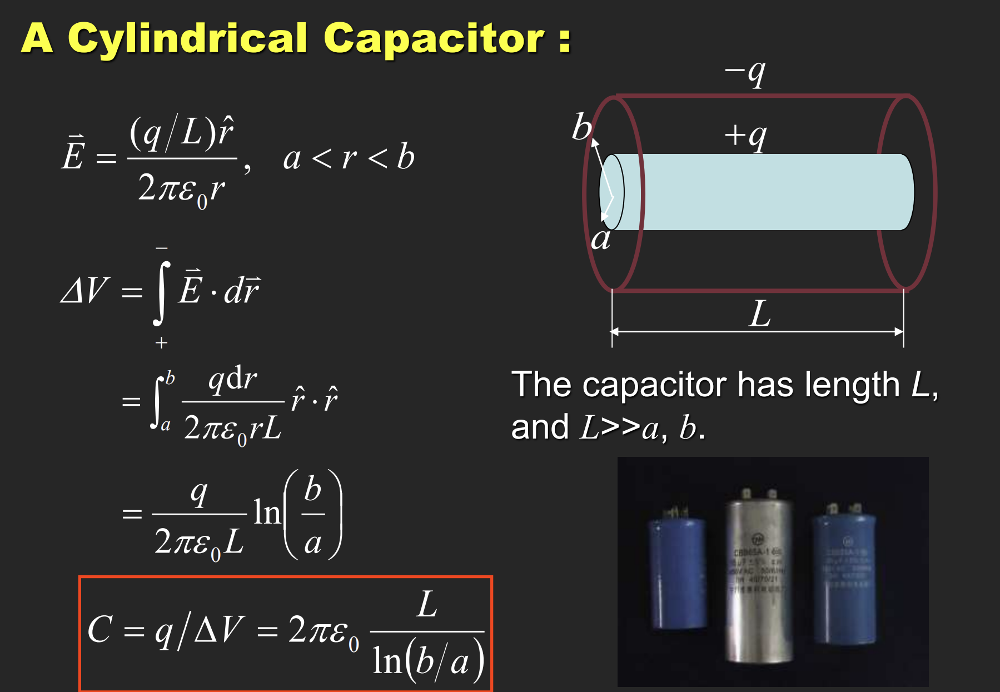
- 球状电容：

并联总电容：\(C = \Sigma C_i\)。串联总电容：\(\frac{1}{C} = \Sigma \frac{1}{C_i}\)。
例

极化¶
介电体处于电场中时，会在内部产生极化电荷，从而减小电场强度。极化电场\(E_p = \frac{E}{k_e}\)。\(k_e\)称为相对介电常数（Relative dielectric constant）。
有了介电体后，电容变为\(C = k_e \varepsilon_0 \frac{S}{d}\)。

考虑真空中两个由无数电偶极子组成的平行圆板，如上图所示，定义极化强度矢量\(\overrightarrow{P} = \frac{\Sigma \overrightarrow{p}}{V}\)（\(\overrightarrow{p}\)为电偶极矩，\(\Delta V\) 为囊括的体积），则有\(\overrightarrow{P} = \varepsilon_0 \chi_e \overrightarrow{E}\)，其中\(\chi_e\)为电极化率。
\(\chi_e + 1 = k_e\)
有\(\iint P dA = \Sigma_{out} q' = -\Sigma_{in} q'\)
极化强度矢量与闭合曲面的内积积分等于该曲面表面的束缚电荷，等于该曲面内部电荷的相反数(外面有多少正的，里面就有多少负的)
这里的\(q'\)是极化电荷！所以这个不是高斯定理。
同时有面电荷密度\(\sigma' = P \cdot n\)，等于极化强度矢量在法向上的分量；由夹角来控制正负。
介电质中的 Gauss 定理¶
（照抄
考虑一个正电荷\(q_0\)放在电介质中，其周围会产生极化电荷\(q'\)
由正宗的高斯定理得到 \(\iint E d A = \frac{q_0 + q'}{\epsilon_0}\)
而由极化电荷和强度矢量的性质有 \(\iint P d A = -q'\)
代入得到\(\epsilon_0 \iint E dA = q_0 - \iint P d A\)
尝试表示\(q_0\)：\(q_0 = \iint (\epsilon_0 E + P) dA\)
于是定义\(D = \epsilon_0 E + P\)为电位移矢量
这说明电位移矢量与闭合曲面内积面积分等于该曲面内的自由电荷（非极化）之和

例

求这个具有两层介电体的电容以及表面的电荷密度。
电容器中的能量¶
考虑一个平行板电容器，其电容为 \(C\)，电压为 \(V\) ，则其具有的能量相当于从负极板不断将电荷移动到正极板，这样的过程中克服电场力所做的功
\(W = \int_0^Q V dq = \frac{1}{2} C V^2\)
考虑到平行板电容 \(C = \frac{\epsilon_0 A}{d}\)，\(V = ED\)
得到能量\(E = W = \frac{1}{2} \epsilon_0 E^2 A d\)
注意到\(Ad\)是夹在两板之间的体积，定义能量密度\(\mu = \frac{1}{2} \epsilon_0 E^2\)
电流¶
电流定义：\(I = \frac{dq}{dt}\)。
电流密度：\(\overrightarrow{j} = \frac{dI}{dS} \overrightarrow{n}\)。
得到电荷守恒：

若 \(\frac{dq}{dt} = 0\)，则上式为0.
平均而言，电流中电子以漂移速度\(v_d\)运动，\(I = neSv_d\)，则有\(\overrightarrow{j} = - ne\overrightarrow{v_d}\)。
欧姆定律¶
 这里的\(\sigma\)为电导率，\(\rho\)为电阻率，\(\sigma = \frac{1}{\rho}\)。
这里的\(\sigma\)为电导率，\(\rho\)为电阻率，\(\sigma = \frac{1}{\rho}\)。
基尔霍夫定律¶
- Junction定律：\(i = \Sigma i_k\)。
- Loop定律：在闭合回路中， \(\Sigma U_k = \Sigma \epsilon_k + \Sigma i R_k = 0\)。
例

注意这里i1 i2 i3的方向是自己假设的，然后运用基尔霍夫定律进行计算就行了。
RC电路¶
结合了电容和电阻的电路。
- 充电时：

- 放电时：

磁场¶
高中就不会的霍尔效应：

磁场是非保守场，所以没有势能的概念。
Biot-Savart 定律¶
定义电流元\(Id\overrightarrow{l}\)，则该电流元产生的磁场大小为\(d\overrightarrow{B} = \frac{\mu_0}{4\pi} \frac{Id\overrightarrow{l} \times \overrightarrow{r}}{r^3}\)。
则有\(\overrightarrow{B} = \int d\overrightarrow{B} = \frac{\mu_0}{4\pi} \int \frac{Id\overrightarrow{l} \times \overrightarrow{r}}{r^3}\)。
\(\mu_0 = 4\pi \times 10^{-7} \mathrm{T \cdot m/A}\)。
只适用于恒定电流。
- 真空直导线：\(B = \frac{\mu_0 I}{2\pi d}\)，其中\(d\)为导线到点的距离。

- 电流圆环：\(B = \frac{\mu_0 I R^2}{2(R^2 + z^2)^{3/2}}\)。

https://blog.csdn.net/weixin_45864618/article/details/106672456
安培环路定理¶
\(\oint \overrightarrow{B} \cdot d\overrightarrow{l} = \mu_0 I\)。
在恒定电流的磁场中，磁感应强度沿任何闭合路径一周的线积分（即环路积分），等于闭合路径内所包围并穿过的电流的代数和的\(\mu_0\)倍
https://zhuanlan.zhihu.com/p/142376701
Gauss 定理（磁场Ver.）¶
\(\iint B dA = 0\)，\(A\)为真空中一个闭合曲面。
磁偶极矩¶
\(\overrightarrow{P_m} = I \overrightarrow{S}\)，其中\(I\)为电流，\(\overrightarrow{S}\)平面单回路围起来的面积矢量。
法拉第电磁感应定律¶
定义磁通量：\(\Phi = \int \overrightarrow{B} \cdot d\overrightarrow{A}\)。
感生电动势：\(\varepsilon = -\frac{d\Phi}{dt} = -\iint_S \frac{d\overrightarrow{B}}{dt} \cdot d\overrightarrow{A}\)。
动生电动势：\(\varepsilon = \int_a^b (\overrightarrow{v} \times \overrightarrow{B}) \cdot d\overrightarrow{l}\)。
发电机：\(\Phi = BLS \cos \omega t\)，\(\varepsilon = \omega BLS \sin \omega t\)。
电感¶
自感¶
一圈匝数为\(N\)，横截面\(S\)的线圈通过电流\(i\)时会感应出磁场\(B\)，则有自感系数\(L = \frac{N\Phi}{i}\)，单位为亨利（1 Henry = 1 T \(\cdot\) m\(^2\)/A）。
由电磁感应得到自感电动势：\(\varepsilon = - \frac{d N \Phi}{dt} = -L \frac{di}{dt}\)。
例：通电螺线管

例：矩形螺绕环
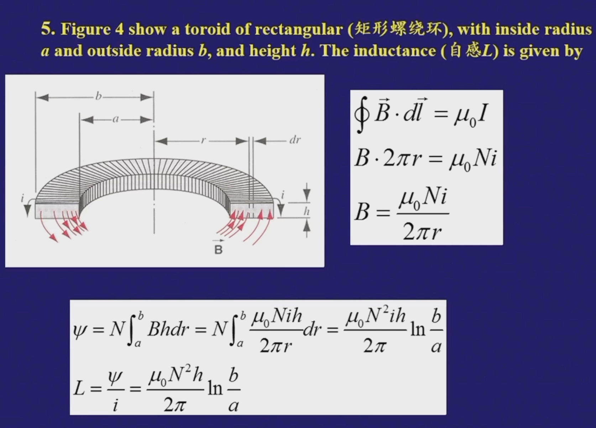
Lr回路
开关连接电源：注意利用回路中总电势变化为0即可，这里定义了自感时间常数\(\tau = L/R\)

开关不连电源：同理，这次类似放电

功率：\(dW=−εdq=−εidt=Lidi\)
存储能量：\(E = \frac{1}{2} L i^2\)
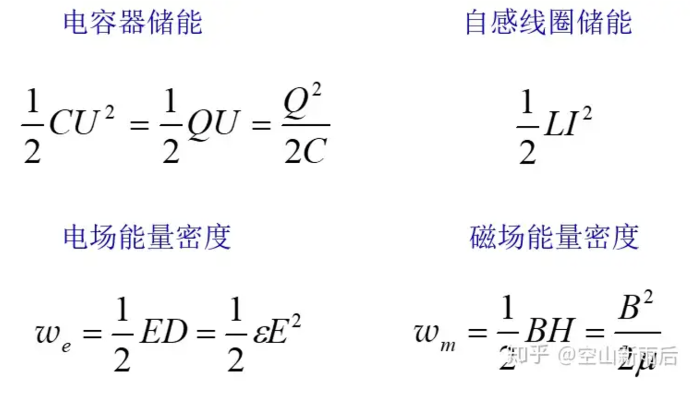
互感¶
考虑两个共轴（轴长为\(l\)）的，匝数分别为\(N_1, N_2\)的，横截面半径都为\(r\)的线圈，通过线圈1的电流\(i_1\)产生的磁通量为\(\mu_0 \frac{N_1}{l} i_1 \pi r^2\)
则通过线圈2的磁通量为\(\Phi_{21} = \mu_0 \frac{N_1 N_2}{l} i_1 \pi r^2\)
线圈2产生的互感电动势为\(\varepsilon_{21} = -\frac{d\Phi_{21}}{dt} = -\mu_0 \frac{N_1 N_2}{l} \pi r^2 \frac{di_1}{dt}\)
将此式写成\(\varepsilon_{21} = -M_{21} \frac{di_1}{dt}\)，其中\(M_{21} = \mu_0 \frac{N_1 N_2}{l} \pi r^2\)为互感系数。
同理，可得线圈1产生的互感电动势为\(\varepsilon_{12} = -M_{12} \frac{di_2}{dt}\)，其中\(M_{12} = \mu_0 \frac{N_1 N_2}{l} \pi r^2\)。
也就是说，\(M_{12} = M_{21} = M\)，也就是互感系数。
磁化¶
通电螺线管中插入铁磁材料，可以使得自感系数增大：\(L = k_m L_0\)，其中\(k_m\)被称为磁导率。
原本杂乱无章的分子磁矩会受到磁场的作用，使得磁矩方向趋于一致，朝向磁场方向，在宏观上相当于在材料外围产生了一个电流\(i'\)
定义磁化强度矢量\(M\)为单位体积内磁矩矢量和\(M = \frac{\Sigma \mu}{V}\)
类比电学中的极化，其满足\(\int M dl = \Sigma_{in} i'\)

则由环路定理 \(\int B dl = \mu_0 \Sigma (i_0 + i') = \mu_0 \Sigma i_0 + \mu_0 \int M dl\)
也就是\(\int (\frac{B}{\mu_0} - M) dl = \Sigma i_0\)
定义磁场强度：\(H = \frac{B}{\mu_0} - M\)
麦克斯韦方程组¶

光学¶
notation
- \(p\)：原物体大小
- \(I\)：像大小
- \(c\)：光速
- \(\lambda'\)：波长
- \(\theta_i\)：入射角
- \(\theta_r\)：反射角
- \(u\)：物距
- \(v\)：像距
- \(r\)：（球面镜）半径
Intro: 光的本质¶
- 波动性：\(d \sin \theta = m \lambda\)，此时相长干涉。
-
粒子性：\(\frac{c'}{c} = \frac{p'}{p} = \frac{\lambda'}{\lambda} = \frac{\sin \theta_i}{\sin \theta_r}\)（折射时）
-
反射定律：\(\theta_i = \theta_r\)
- 折射定律：\(n_1 \sin \theta_i = n_2 \sin \theta_r\)
- 折射率：\(n = \frac{c}{v}\)
全内反射：\(n_1 \sin \theta_c = n_2 \sin 90^\circ\)，得到\(\sin \theta_c = \frac{n_2}{n_1}\)，其中\(\theta_c\)为临界角，此时折射光线全部消失，只有反射光线。
费马原理¶
简单理解为 \(\frac{dt}{dx} = 0\)
- 反射定律的证明：
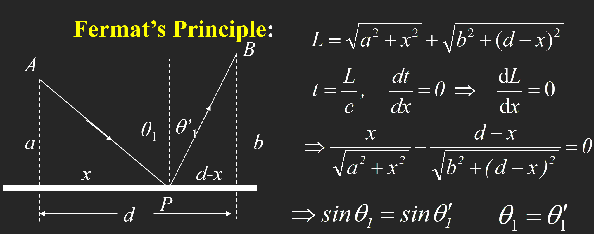
- 折射定律证明：
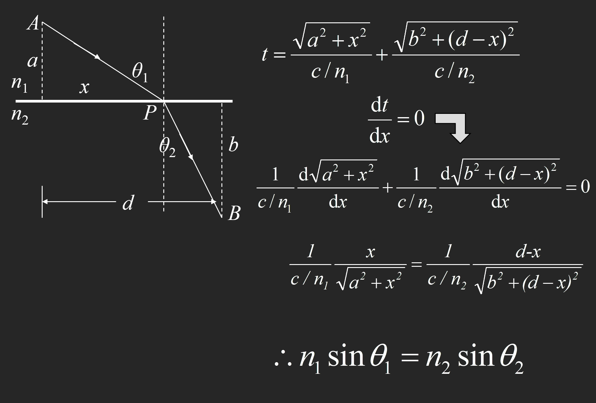
球面镜反射等式

- 通过焦点的光线反射后平行于平面
- 平行于平面的光线反射后通过焦点
- 通过曲率中心（Center of Curvature）的光线原路反射回去
- 射向平面与球面镜交点的光线满足反射定律
球面镜折射等式

例子
一个物体在物距为\(u\)处沿轴向一个球面反射镜以\(V_0\)速度运动，球面镜半径为\(R\)，求像的运动速度\(V\)。
- 由\(\frac{1}{u} + \frac{1}{v} = \frac{1}{f} = \frac{2}{R}\)，得到\(v = \frac{1}{\frac{2}{R} - \frac{1}{u}}\)（注意这个是小写\(v\)是像距！）
- 于是有\(V = \frac{dv}{dt} = \frac{dv}{du} \frac{du}{dt} = - \frac{\frac{1}{u^2}}{(\frac{2}{R} - \frac{1}{u})^2} \frac{du}{dt} = -(\frac{R}{2u-R})^{2} V_0\)
惠更斯原理¶
- 波前（Wavefront）：相位相同的点的集合
- 子波（Wavelet）：波前上的每一点都可以看作是一个次波源，次波源发出的波称为子波
可以解释点光源以球面发散，从而解释了光的衍射
prequisite
如果光波在介质中传播时，波长为\(\lambda\)，传播距离为\(r\)，则其相位等于\(\phi = 2 \pi \frac{r}{\lambda}\)
介质中波长 \(\lambda_n = \frac{\lambda}{n}\)，期中\(n\)为介质折射率，于是上式变为\(\phi = 2 \pi \frac{nr}{\lambda}\)
定义光程（Optical Path）：\(L = nr\)，则有\(\phi = \frac{2\pi}{\lambda} L\) （于是\(r\)为光在介质中传播的几何距离）
则光程差（Optical Path Difference）：\(\Delta L = n_1 r_1 - n_2 r_2\)，则有相位差 \(\Delta \phi = \frac{2\pi}{\lambda} \Delta L\)
干涉（Interference）¶
两束光 \(I_1, I_2\) 相遇，总强度为\(I = I_1 + I_2 + 2 <E_1 \cdot E_2>\)
- 干涉时，\(2 <E_1 \cdot E_2> = 0\)
- 不干涉时，\(2 <E_1 \cdot E_2> \neq 0\)
这三种情况下不干涉：

于是得到相干条件：
- 频率相同
- 振动方向相同
- 相位差恒定
双缝干涉
note：光强与振幅的平方成正比
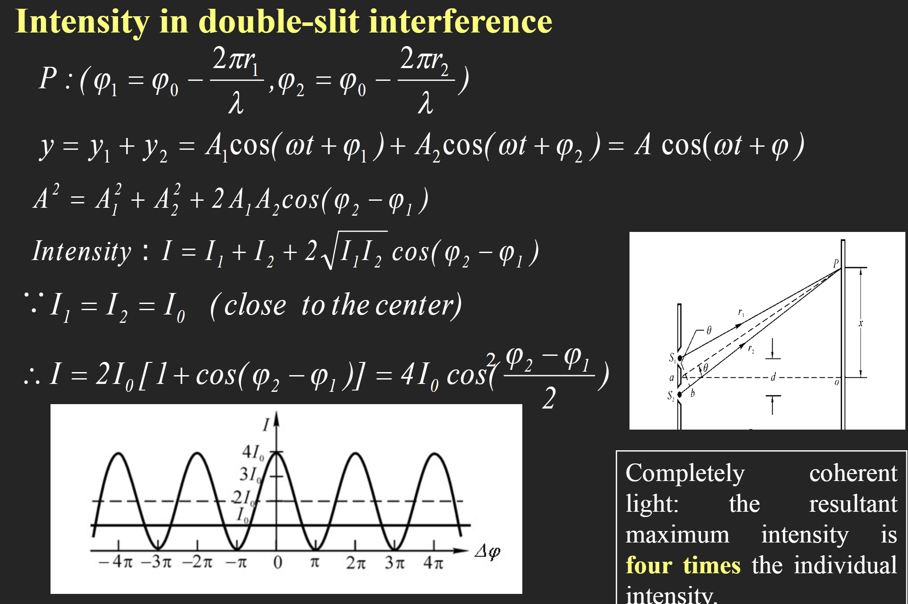
杨式双缝干涉中的常用公式：

（这是什么？我打算直接默写）\(I = I_0 \frac{sin^2 \alpha}{\alpha^2} cos^2 \beta\)，其中\(\alpha = \frac{\pi a \sin \theta}{\lambda}, \beta = \frac{\pi d \sin \theta}{\lambda}\)
这里第 \(n\) 级明纹就代 \(k = n\)，第 \(n\) 级暗纹就代 \(k = n - 1\)（只有这里要取 \(k = n - 1\)，其他所有涉及 \(k\) 的地方都是 \(k = n\)）
例1
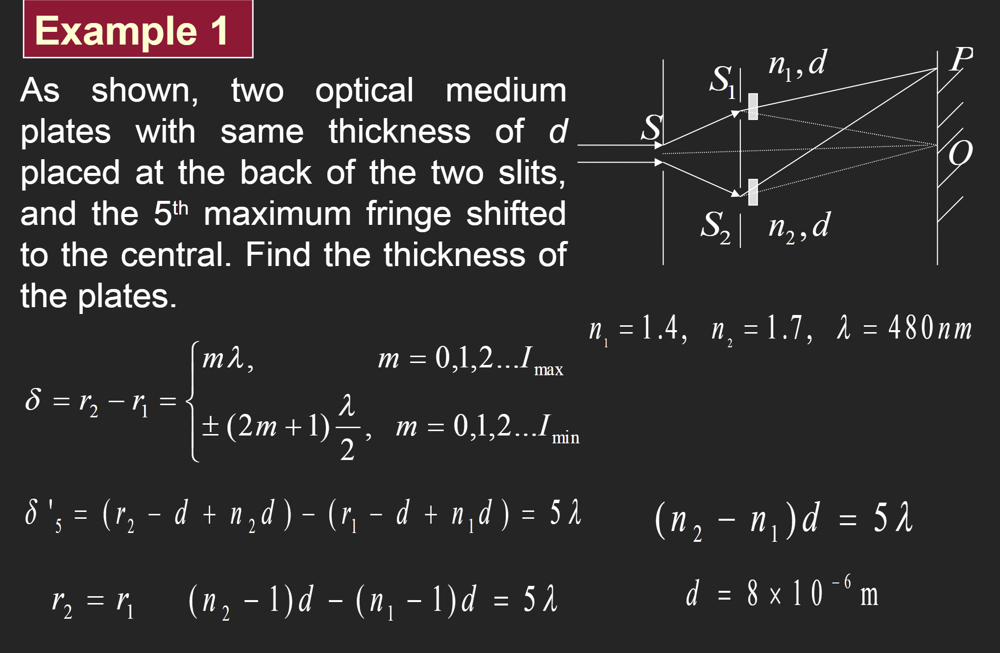
半波损失¶
Credit to https://zhuanlan.zhihu.com/p/550675894
- \(\delta = \delta_0 + \frac{\lambda}{2}\)，原光程加上半波损失
- \(\Delta \phi = \frac{2\pi}{\lambda} \Delta \delta = \pi\)
- 当光从光疏到光密质，正入射及掠入射时反射光均有半波损。
- 当光从光密到光疏质，正入射时反射光无半波损（掠入射时发生全反射） 。

薄膜干涉¶

经过一系列推导，①②两束光的光程差 \(\delta' = 2 n_2 d \cos \gamma + (\frac{\lambda}{2})\)
考虑半波损失后，根据 \(n_1, n_2,n_3\) 的相对大小，对①②光的光程选择加不加 \(\frac{\lambda}{2}\)（\(n_1 > n_2 > n_3\) 或者 \(n_1 < n_2 < n_3\) 的时候，光程差不加半波损失；\(n_1 > n_2 < n_3\) 或者 \(n_1 < n_2 > n_3\) 的时候，光程差加半波损失）
这里的波长指的是真空中波长，如果要用介质中波长要换算：\(\lambda = n \lambda_n\)
等厚干涉¶
公式和薄膜干涉是一样的，考虑 \(n > 1\) 的劈尖，劈棱处（最薄的地方）的光程差为 \(\delta = 2 n d \cos \gamma + \frac{\lambda}{2}\)，这里 \(d = 0\)，由于近似垂直入射所以 \(\cos \gamma = 1\)，所以 \(\delta = \frac{\lambda}{2}\)，是半波长奇数倍，因此劈尖处是暗纹。
- 第 \(k\) 级暗纹处的厚度
- 对于第 \(k\) 级暗纹，其厚度记为 \(d_k\)，则 \(\delta = 2 n d_k + \frac{\lambda}{2} = (2k + 1) \frac{\lambda}{2}\)，解得 \(d_k = \frac{k \lambda}{2n}\)
- 相邻暗纹的厚度差
- \(\Delta d = d_{k+1} - d_k = \frac{\lambda}{2n}\)
- 相邻条纹间距（在劈尖上表面）
- \(L = \frac{\Delta d}{\sin \theta} = \frac{\lambda}{2 n \sin \theta} = \frac{\lambda}{2 n \theta}\)
- 由此得到 \(\theta = \frac{\lambda}{2 n L}\)
- 劈尖上表面移动（或旋转）时，\(d_k\) 的大小不变
牛顿环¶
依旧利用 \(\delta = 2 n d + \frac{\lambda}{2} = 明暗纹公式\) 推导，过程见：https://www.kailqq.cc/NOTE/Physics/light/?h=%E7%89%9B%E9%A1%BF#_22
- 第 \(k\) 级明/暗环处的半径
- 记圆凸镜半径为 \(R\)
- 暗环：\(r_k = \sqrt{\frac{k \lambda R}{n_2}}\)，\(n_2\) 为圆凸镜和底下长方题之间的介质折射率，一般是空气，取 \(n_2 = 1\)
- 明环：\(r_k = \sqrt{\frac{(k - \frac{1}{2}) \lambda R}{n_2}}\)
衍射（Diffraction）¶
夫琅和费衍射¶
这里采用菲涅尔半波带法判断得到的是明纹还是暗纹
- 两个波源的光程差：\(\delta = a \sin \theta\)，可分为偶数个半波带时为暗纹，奇数个半波带时为明纹
- 和干涉是反过来的！因此中央是明纹（Bright fringe），其宽度为 \(\frac{2 \lambda f}{a}\)，\(f\) 为透镜到右侧屏幕的距离（一般就是焦距）
- 第 \(k\) 级暗纹距离中央的距离为 \(x_k = k \frac{\lambda f}{a}\)（\(\delta = a \sin \theta = a \tan \theta = a \frac{x_k}{f} = k \lambda\)）
- 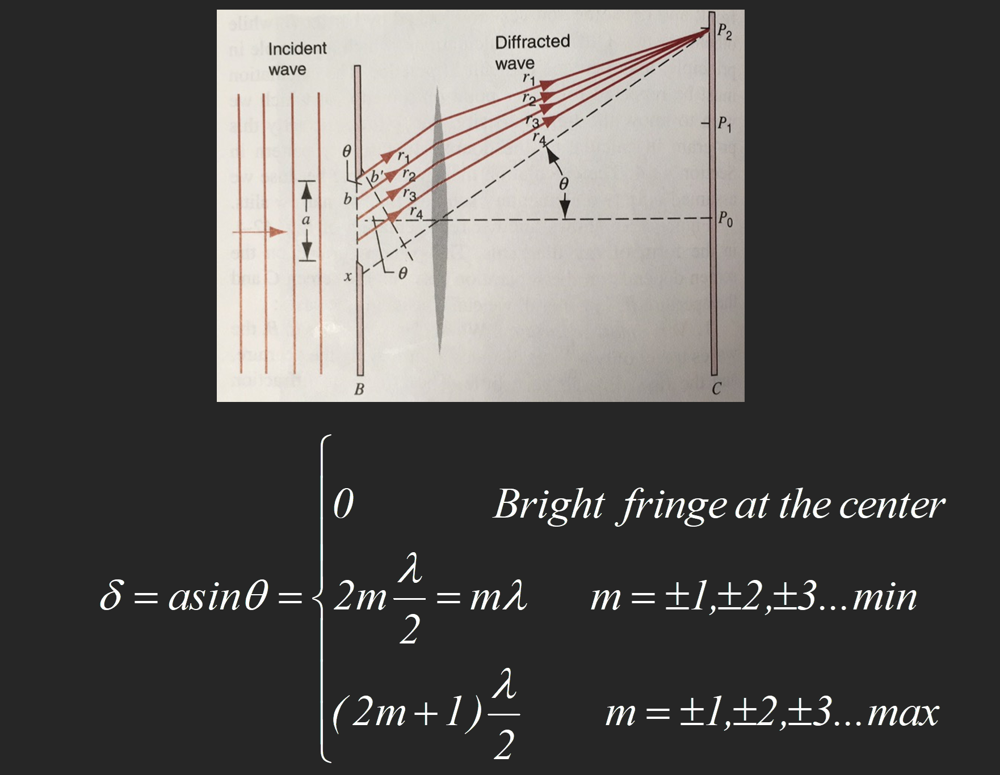
圆孔衍射
- 第一级暗纹衍射角 \(\theta_1 = 1.22 \frac{\lambda}{D}\)，\(D\)为圆孔直径
- 于是第一级暗纹距中央：\(x = f \theta_1 = 1.22 f \frac{\lambda0}{D}\)
光栅¶
- 光栅常数：\(d = a + b\)，\(a\) 为光栅上的透光缝宽度，\(b\) 为光栅上的不透光缝宽度
- 光栅的每个缝形成各自的单缝衍射
- 缝与缝之间形成多缝干涉
- 相邻两缝的光程差：\(\delta = (a+b) \sin \theta\)
- 明纹条件：\(\delta = k \lambda\)
- 暗纹条件（暗纹由各缝射出的衍射光因干涉相消形成）
- \(Nd \sin \theta = k' \lambda\)，\(k'\)不为\(N\)的整数倍
缺级
- 由于衍射影响，在该出现明纹的地方不再出现明纹
- 在干涉导致的明纹处：\((a+b) \sin \phi = k \lambda\)
- 在衍射导致的暗纹(min)处：\(a \sin \phi = k' \lambda\)
- 联立得到 \(k = \frac{a+b}{a} k'\)，此时缺级
Dispersion: \(D = \frac{\Delta \theta}{\Delta \lambda} = \frac{k}{d \cos \theta}\)
分辨本领（在某级恰好能分辨的两条谱线的平均波长\(\lambda\)与其波长差\(\Delta \lambda\)的比值）：\(R = \frac{\lambda}{\Delta \lambda} = kN\)（此时波长差是最小的！）
光强：\(I = I_0 \frac{sin^2 \alpha}{\alpha^2} \frac{\sin^2 N \beta}{\sin^2 \beta}\)，这里依旧是\(\alpha = \frac{\pi a \sin \theta}{\lambda}, \beta = \frac{\pi d \sin \theta}{\lambda}\)
- 于是此时可以由这个推出明暗纹公式
- 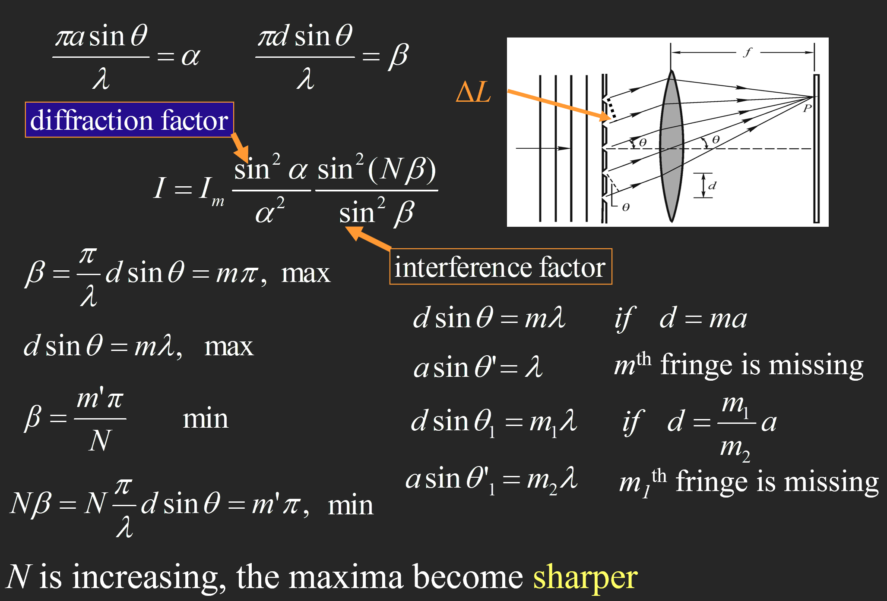
Width of the maximum: \(\delta \theta = \frac{\lambda}{Nd \cos \theta}\)
晶体衍射 Brag 公式
\(2d \sin \theta = nλ\)
其中d是晶格常数，θ是入射角，
偏振(Polarization)¶
马吕斯定律：\(I = I_0 \cos^2 \theta\)，电矢量 \(E = E_0 \cos \theta\)，其中\(\theta\)为光的偏振角，例如说检偏器和偏振片的夹角
布儒斯特角：入射角和反射角和为\(90^{\circ}\)时，反射光为完全偏振光。（折射光是部分偏振光）
即 \(tan \theta_{入射} = \frac{n_2}{n_1}\)
量子力学¶
黑体辐射¶
- 单色辐出度 Spectral emittance
- 单位时间、单位表面积上发射的波长在\(\lambda\) 到\(λ +d \lambda\)范围内的辐射能为\(dM_λ\) ，则 \(M_{\lambda}(T) = \frac{d M_{\lambda}}{d \lambda}\)（\(T\) 和 \(\lambda\) 的函数）
- 辐射出射度 total intensity
- 单位时间、单位表面积上发射全波长范围内的辐射能
- \(M(T) = \int_0^{\inf} M_{\lambda}(T)d \lambda\)
- Stefan-Boltzmann 定律
- \(M_B(T) = \sigma T^4\)，\(\sigma = 5.67 \times 10^{-8} W/(m^2 K^4)\)
- Wien 位移定律
- \(T \lambda_m = b\)，其中 \(\lambda_m\) 是某温度下单色辐出度最大对应的波长（曲线峰值），\(b = 2.898 \times 10^{-3} m K\)
- 普朗克辐射定律：\(M(\lambda, T) = \frac{2 \pi h c^2}{\lambda^5} \frac{1}{e^{\frac{h \nu}{k T}} - 1}\)
- 两种特殊情况：
- 两种特殊情况：

光电效应¶
- \(p = \frac{h}{\lambda}\), \(E = h \nu, m = \frac{h \nu}{c^2}\)
- 光电效应：光照射到金属表面，金属表面会发射电子
- \(h \nu = E_{km} + A = \frac{1}{2} m v^2 + A\)，其中\(A\)为金属的逸出功
- 即，携带能量为\(h \nu\)的光子，击中金属后转化为电子，没有时间延迟。
- 遏制电压（加遏止电压时光电流为0）：\(U = \frac{E_{km}}{e} = \frac{h \mu - A}{e}\)
- 截止频率：\(h \nu_0 = A\)

康普顿散射¶
推导过程如下
- 光子与电子碰撞后，光子的波长会变长，电子的动能会增加
- 光子：\(E = h \nu\), \(p = \frac{h \nu}{c} = \frac{h}{\lambda}\)
- 电子：\(E = m_{0}c^2\), \(p = mv\)
- 碰撞时，能量守恒：\(h \nu + m_{0}c^2 = mc^2 + hf'\)
- 动量守恒：
- X: \(\frac{h \nu}{c} = \frac{hf'}{c} \cos \phi + mv \cos \theta\)
- Y: \(0 = \frac{h \nu}{c} \sin \phi - mv \sin \theta\)
- 由此可以解出\(\lambda' - \lambda = \frac{h}{m_{0}c}(1 - \cos \phi)\)
- \(\phi\)为光子偏离原方向的散射角，\(\theta\)为电子偏离原方向的散射角
物质波¶
同样有\(E = h \nu\), \(p = \frac{h \nu}{c} = \frac{h}{\lambda}\)
不确定性关系
\(\Delta x \Delta p_x \ge \frac{h}{4 \pi}\)
\(\Delta E \Delta t \ge \frac{h}{4 \pi}\)
波函数和概率密度¶
- 约化普朗克常数：\(\hbar = \frac{h}{2 \pi}\)
\(\Psi (x,t) = \psi_0 e^{i(kx-\omega t)}\)
\(\Psi^* (x,t) = \psi_0^* e^{-i(kx-\omega t)}\)
\(P(x) = \Psi \Psi^*\)
算符定义
- 动量算符：\(p = -i \hbar \frac{\partial}{\partial x}\)
- 能量算符：\(E = i \hbar \frac{\partial}{\partial t}\)
薛定谔方程
- 一维含时：\(E \Psi = i \hbar \frac{\partial \Psi}{\partial t} = -\frac{\hbar^2}{2m} \frac{\partial^2 \Psi}{\partial x^2} + U \Psi\)，其中\(U\)为势能
- 若势能不随时间变化，则可以化为一维定态：

一维势阱

- $ P(x) = \frac{2}{a} \sin^2 \frac{n \pi}{a} x$
- 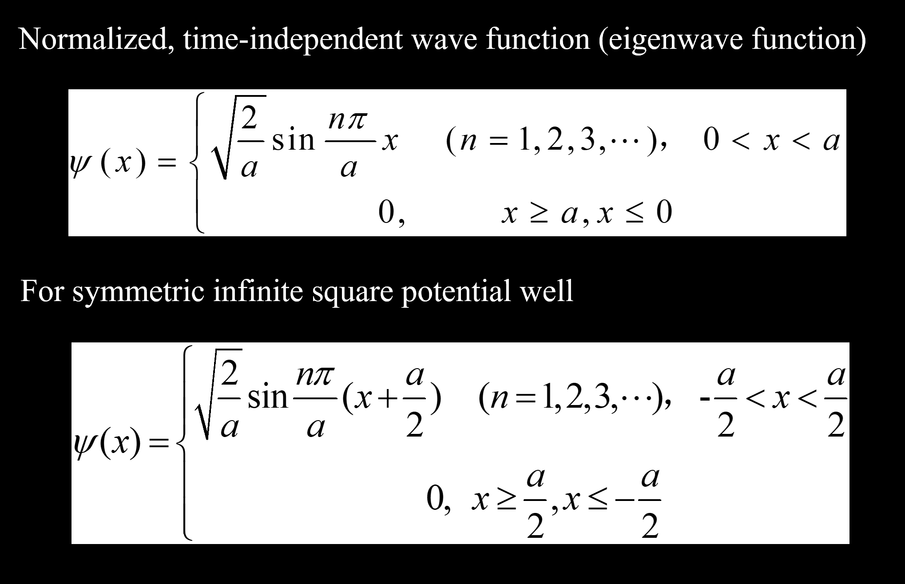
氢原子结构¶
- 能量量子化：\(E_n = \frac{E_1}{n^2} = - \frac{1}{n} \frac{me^4}{8 \epsilon_0^2 h^2}\)
- 电子跃迁：
- 三个量子数：
- 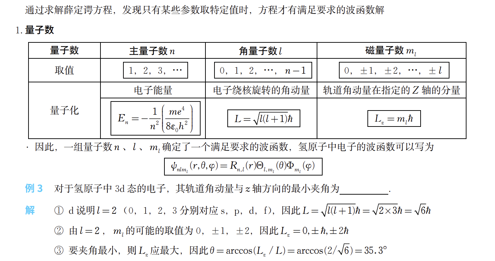

小测部分¶
第一次小测¶
第二次小测¶

已知这样的一对非平行极板，求其电容，其中上板横向纵向长度 \(a, b\), 上板最低点与下板距离 \(d\)，最高点与下板距离 \(d+h\) 已知，\(h<<d\)
解
先定义一下上板倾角为 \(\theta\)，下板横向长为 \(x\)。则由于 \(d\) 很小，倾角趋于0，有近似 \(\tan \theta = \sin \theta = \frac{h}{a}\)，那么取下板沿 \(x\) 方向很小的一截 \(dx\)，这一截的下板面积是 \(bdx\)，且近似与上板平行（上板平行重合的这一小截也视作面积是 \(bdx\)，则由平行极板电容公式 \(C = \frac{\epsilon_0 A}{d}\)，得到\(dC=\frac{\epsilon_0 bdx}{d+\tan \theta x}\)
直接对 \(x\) 从0到 \(a\) 积分，
得到 \(C = \int_0^a \frac{\epsilon_0 bdx}{d+\frac{h}{a} x} = \frac {\epsilon_0 a b}{h} \cdot \ln \frac{h+d}{d}\)